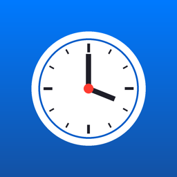

PunchCard Support
Help for PunchCard: TimeClock
Frequently asked questions
I forgot to clock out. How do I fix it?
Open the Timesheet tab, tap the punch, set the correct clock-out time and tap Save. To add a punch you missed entirely, tap the + next to that day.
How are shifts past midnight counted?
A shift counts fully on the day you clocked in, like a business time clock. A shift from 10 PM to 6 AM counts as 8 hours on the first day.
How do I send my hours to someone?
On the Report or Timesheet tab, tap the share icon at the top right and choose Print, Email or Share / Save CSV. Choose "Save to PDF" in the print screen to make a PDF. Email requires an account in Apple's Mail app; otherwise use Share to send it with another app.
Is my data backed up?
Your entries are stored only on your iPhone and are included in your regular iPhone backup (iCloud Backup or your computer). Deleting the app deletes your entries.
Which week does "This Week" use?
Weeks follow your iPhone's region settings (for example, Sunday to Saturday in the United States, Monday to Sunday in most of Europe).